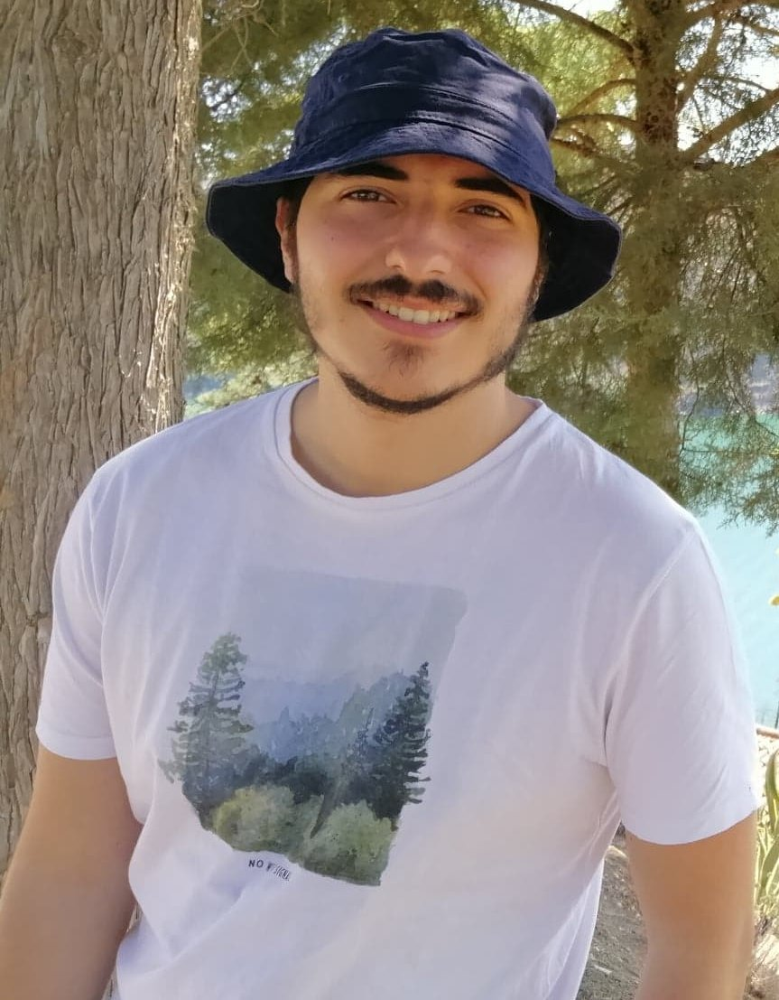

I have participated in several capture-the-flag competitions over the years as a member of STT
I usually focus on solving cryptography challenges. Here are some of my writeups:
I have implemented some tools to help solve challenges:
- Symbolic Mersenne Cracker - A tool that models the mersenne twister function as a Z3 program and is able to predict the next bits coming out of Python's RNG given just a few bits
I was one of the team captains of Team Europe, and won ICC.
Now I get invited to create cryptography challenges for the new candidates, since I am too old to participate as a player 😢.
Over the years I won multiple awards (usually in teams) in several different CTF competitions, including:
To name a few. Anyways, yeah I like to play CTFs a lot